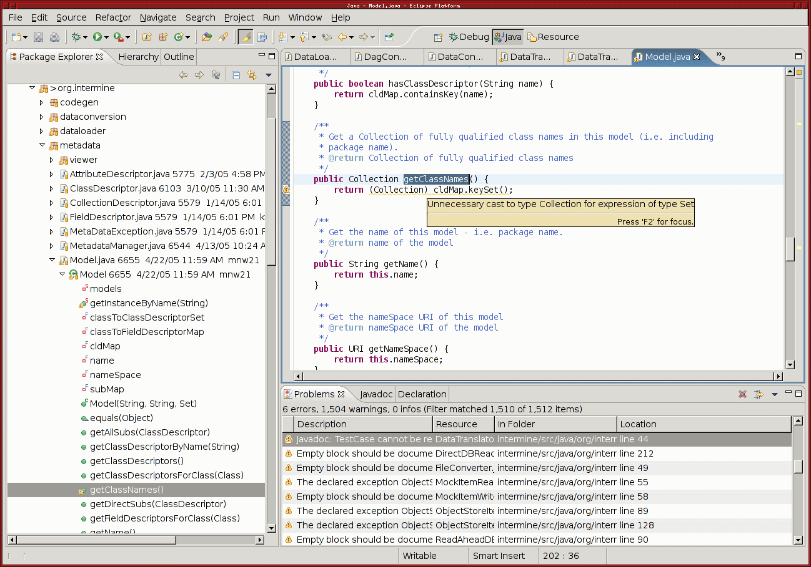
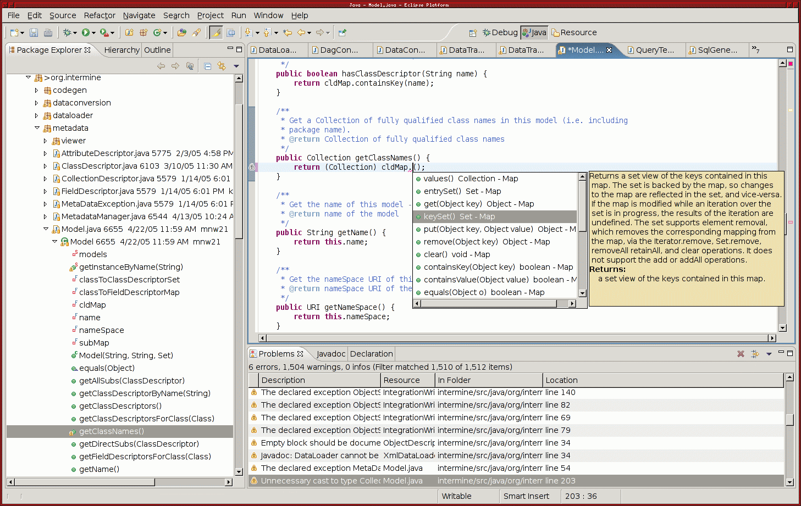
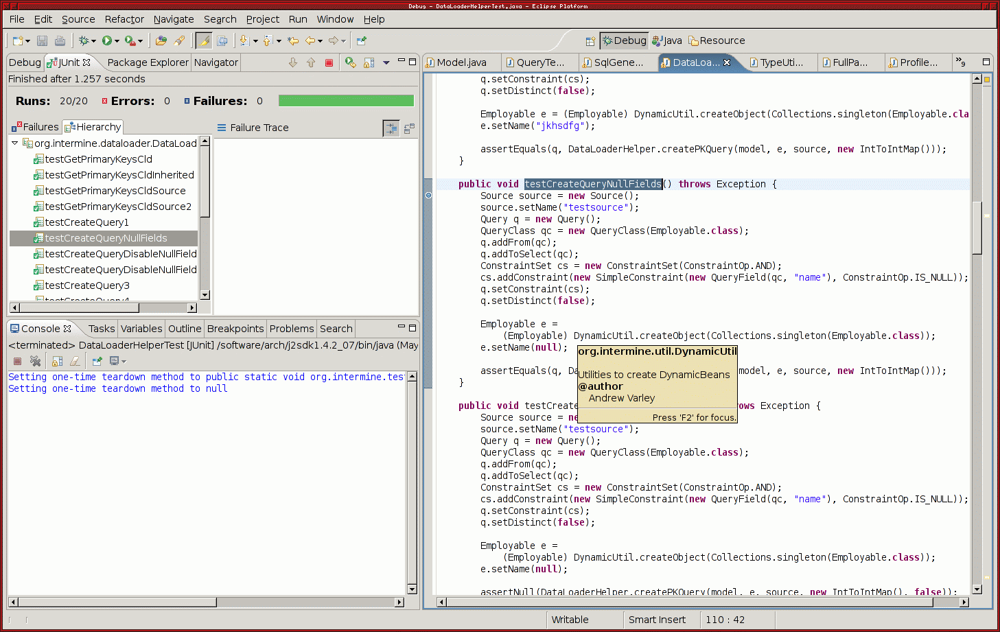
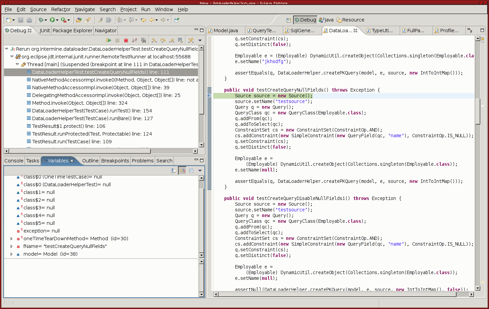
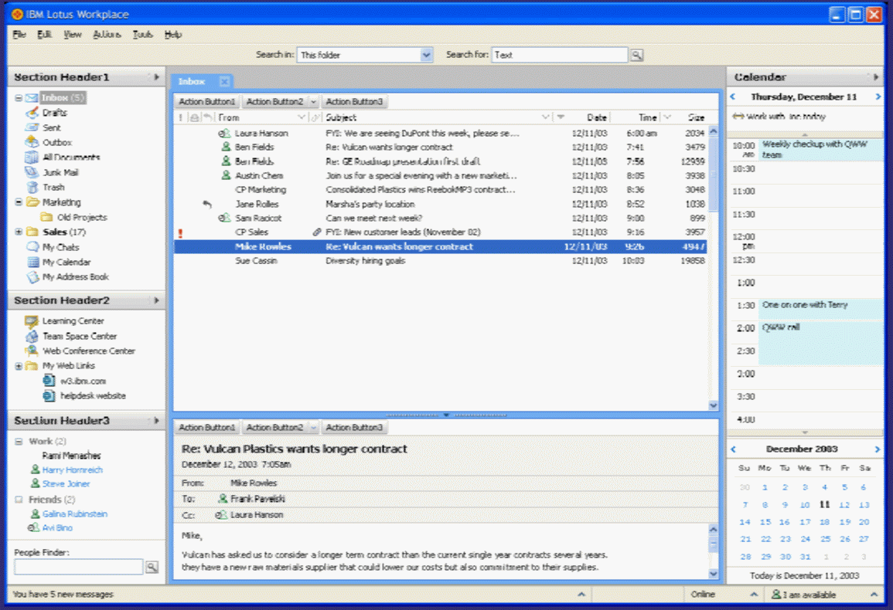

Users of the RCP packages can pick and choose what to use (although there are some dependences)

import org.eclipse.swt.widgets.Display;
import org.eclipse.swt.widgets.Shell;
public class SimplestSWTExample {
public static void main(String []args){
Display display = new Display();
Shell shell = new Shell(display);
shell.setText("Simplest SWT Example");
shell.pack();
shell.open();
while (!shell.isDisposed()){
if (!display.readAndDispatch()){
display.sleep();
}
}
display.dispose();
}
}
while (!shell.isDisposed()){
if (!display.readAndDispatch()){
display.sleep();
}
}
Better control with less surprises
The CPAN archive contains thousands of modules
"The overall structure of Perl derives broadly from C. Perl is a procedural programming language, with variables, expressions, assignment statements, brace-delimited code blocks, control structures, and subroutines."
...
$count = 10;
while ($count > 0) {
if ($count % 2 == 0) {
print $count;
print "\n"
}
}
...
Language support for regular expressions. eg.
if ($some_string =~ /fred (.*)/i) {
print "Fred's surname: $1\n";
}
Perl connects:
Perl example - modify a file in-place
perl -p -i.bak -e 's/foo/bar/g' *.txt
Meaning:
Names:
10001 Huey
10002 Louie
10003 Dewey
Heights:
10001 50
10002 60
10005 65
#!/usr/bin/perl
use strict;
use warnings;
use IO::All;
my %name_hash = ();
foreach my $line (io('names.txt')->slurp) {
my ($id, $name) = split " ", $line;
$name_hash{$id} = $name;
}
foreach my $line (io('heights.txt')->slurp) {
my ($id, $height) = split " ", $line;
die "no name for $id\n" unless exists $name_hash{$id};
print "$id $name_hash{$id} $height\n";
}
merry (Work/perl)> ./simple_example.pl
10001 Huey 50
10002 Louie 60
no name for 10005
Embed C in Perl programs:
use Inline C => <<'END_C';
void greet() {
printf("Hello, world\n");
}
END_C
greet;
Another example:
use Inline C => <<'END_C';
int times2(int a) {
return a * 2;
}
END_C
print ×2(8);
Example:
#!/usr/bin/perl
use strict;
use warnings;
use Inline Java => <<'EOJ';
public class Hi {
String greeting;
public Hi(String greeting) {
this.greeting = greeting;
}
public String getGreeting() {
return greeting;
}
}
EOJ
my $greeter = new Hi("hello!");
print $greeter->getGreeting(), "\n";
Embedding perl:
<html>
% my $planet = "World";
Hello, <% $planet %>!
</html>
Output:
Hello, World!
Using mason as a glorified server-side include (SSI) mechanism:
Header (header.mas):
<%args>
$head
</%args>
<html>
<head><title>Welcome to Wally World!</title></head>
<body bgcolor="#CCFFCC">
<center><h1><% $head %></h1></center>
Footer (footer.mas):
<hr>
<center><a href="/">Home</a></center>
</body></html>
Main page:
<& header.mas, head => "Wally World Home" &> Here at Wally World you'll find all the finest accoutrements. <& footer.mas &>
Alternatively, using the "autohandler" facility, pages will automatically be included in a template page.
Example autohandler:
<html>
<head>
<title>
Flymine Website
</title>
</head>
<body>
% $m->call_next;
<br>
</body>
</html>
<%args>
$iql_string => undef;
</%args>
<%perl>
use FlyMine::ObjectStoreWrapper;
my $results;
if (defined $iql_string) {
$results = FlyMine::ObjectStoreWrapper->execute($iql_string);
}
</%perl>
<form name="iql_form" method="post" action="/mt/iql">
<textarea name="iql_string" cols="80" rows="20">
<% $iql_string | h %>
</textarea>
<input type="submit" />
</form>
% if (defined $iql_string) {
% if (defined $results) {
<& results, results=>$results &>
% } else {
<p>no results</p>
% }
% }
<table>
% for (my $row_idx = 0; $row_idx < $results->size; $row_idx++) {
% my $row = $results->get($row_idx);
<tr>
% for (my $col_idx = 0; $col_idx < $row->size; $col_idx++) {
% my $obj = $row->get($col_idx);
<td>
<%perl>
if (ref $obj) {
print $obj->getId(), " ", ref $obj;
} else {
print $obj;
}
</%perl>
</td>
% }
</tr>
% }
</table>
<%args>
$results
</%args>
package FlyMine::ObjectStoreWrapper;
BEGIN {
$ENV{PERL_INLINE_DIRECTORY} = '/tmp';
$ENV{CLASSPATH} = 'intermine-mason.jar'
}
use Inline (Java => 'STUDY',
STUDY => ['org.intermine.objectstore.ObjectStoreFactory',
'org.intermine.objectstore.query.iql.IqlQuery',
],
AUTOSTUDY => 1,
PACKAGE => 'main'
);
my $os = undef;
sub execute {
my $self = shift;
my $iql_string = shift;
my $results = undef;
if (!defined $os ) {
$os = org::intermine::objectstore::ObjectStoreFactory->getObjectStore('os.unittest');
}
my $iql_query =
new org::intermine::objectstore::query::iql::IqlQuery($iql_string,
'org.intermine.model.testmodel');
$results = $os->execute($iql_query->toQuery());
return $results;
}